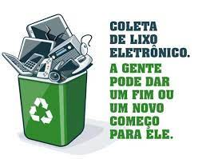

Lixo Eletrônico e suas consequências
Resíduos de Equipamentos Elétricos e Eletrônicos (REEE) ou popularmente conhecido como lixo eletrônico(E-lixo) são um tipo específio lixo propagado erroneamente, mas então oque seria esse tipo de lixo?
Possuimos 4 subcategorias desse lixo:
1.Grandes equipamentos:
Geladeiras, freezers, máquinas de lavar, fogões, ar condicionados, microondas, grandes TVs, etc.
2.Pequenos equipamentos e eletroportáteis:
Torradeiras, batedeiras, aspiradores de pó, ventiladores, mixers, secadores de cabelo, ferramentas elétricas, calculadoras, câmeras digitais, rádios, etc.
Equipamentos de informática e telefonia:
Computadores, tablets, notebooks, celulares, impressoras, monitores e outros.
4.Pilhas e bateria portáteis:
Pilhas modelos AA, AAA, recarregáveis, baterias portáteis de 9 V, etc.
O principal prejuizo causado pelos E-lixos ocorrem devido aos metais pesados, que geram um grande dano a fauna e a flora do local descartado, consequentemente levando a contaminação dos solos e lençóis freáticos,clique aqui para saber mais da maneira correta do descarte deste lixo em específico
Agora que sabemos quais são os resíduos responsáveis, como podemos solucionar este problema?
Clique na imagem para ver mais sobre a reciclagem